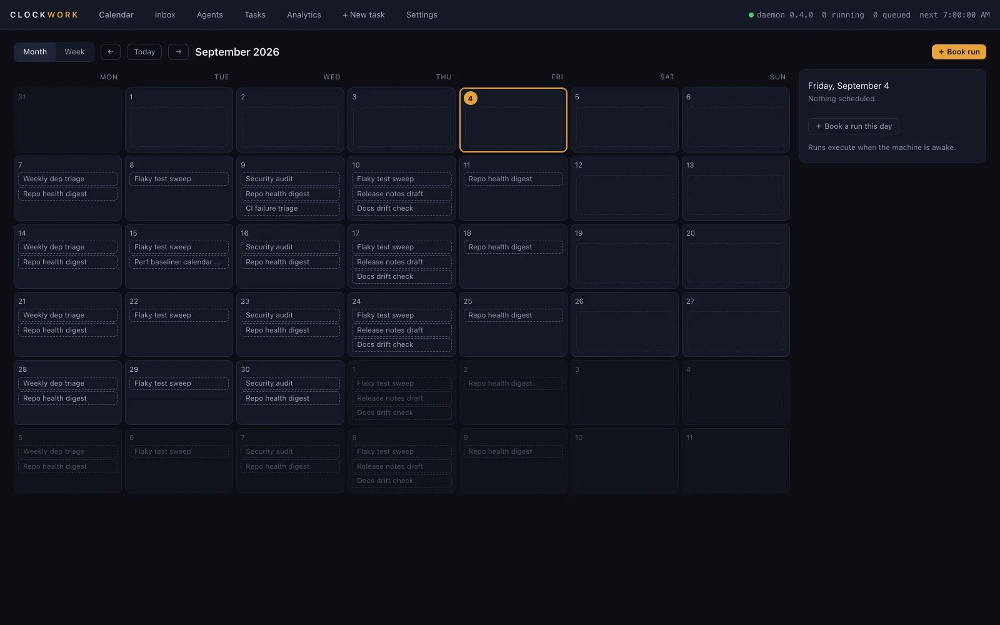
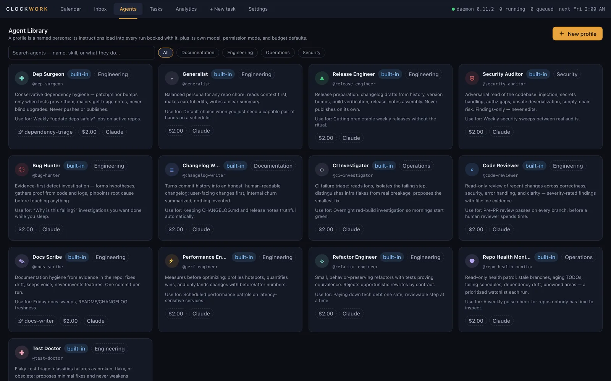
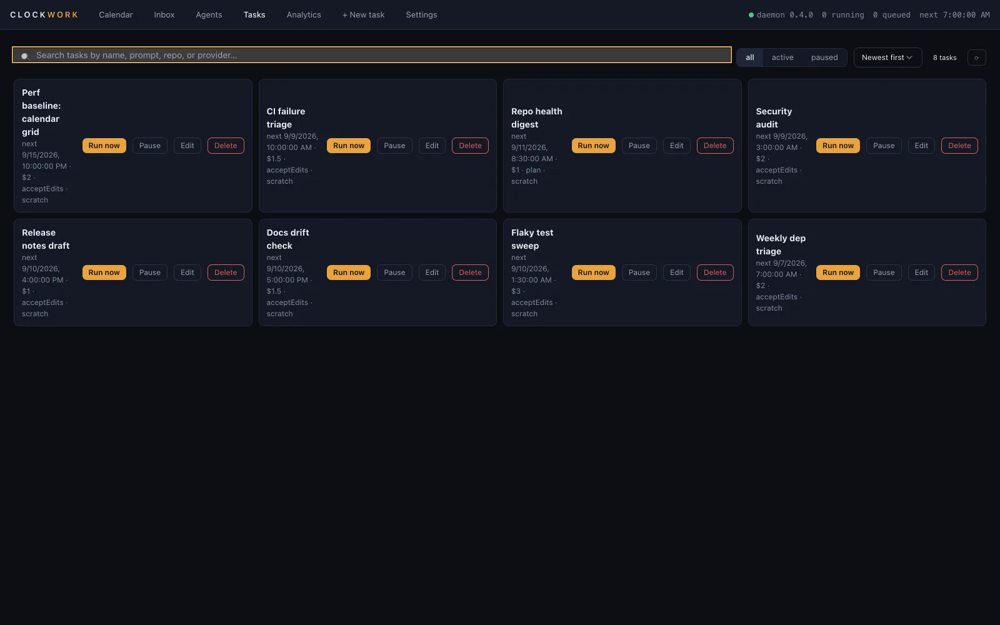
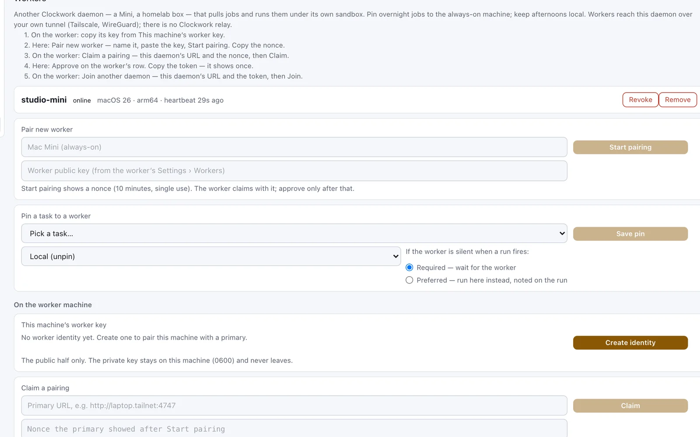
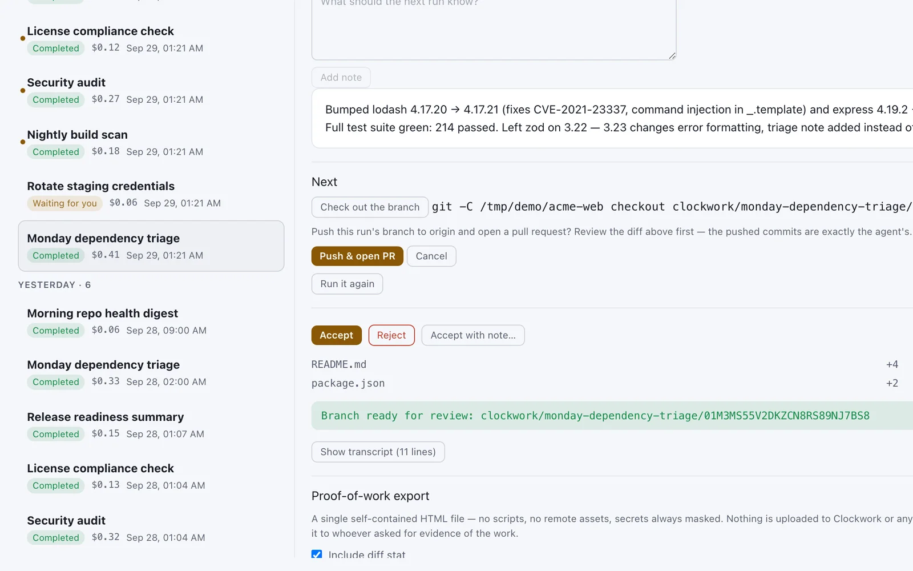
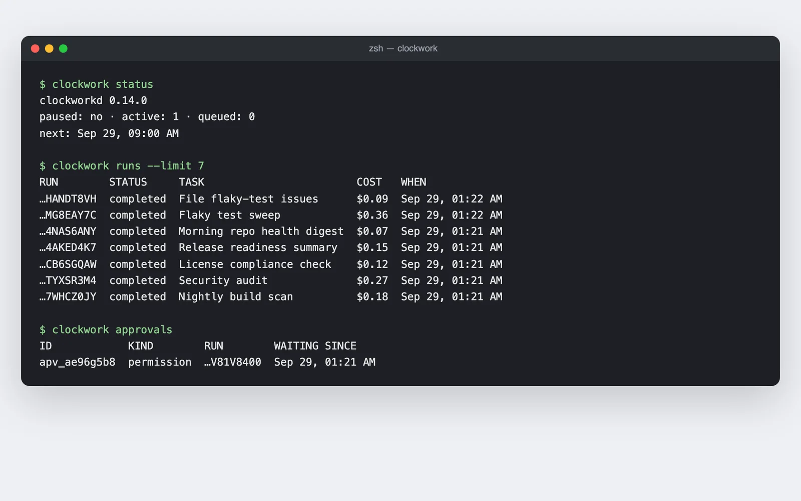

-
22:00
You book it like a meeting.
Pick an agent, a repository and a dollar cap. Type the schedule the way you would say it. Clockwork shows how it read the rule and the next real run times before you save.
-
02:00
It works the night shift, on the Mac that stays awake.
Your laptop can sleep. A paired Mac mini picks the job up, cuts a fresh worktree and branch, and runs your own CLI login inside a macOS sandbox. Your SSH keys and cloud credentials are not readable from in there.
-
02:14
A risky step waits for you.
The run pauses and your phone lights up. Approve or deny from Telegram. If you sleep through it, the ask holds for the rest of the run's budget, then fails closed. Approval holds are a Claude Code engine feature.
-
07:40
You read a report, then open the pull request.
What it did, what it skipped, what it cost, and every ask with its answer. The next action is a button. One of them pushes the branch and opens the PR.
Put your agents on a schedule.
Book Claude Code, Codex, OpenCode or Hermes like a meeting. Clockwork runs it sandboxed, on this Mac or one that stays awake, and files a report you can turn into a pull request.
agent shift, doneagent shift, bookedyour calendar, over ICSwaiting for youExample week. Costs are illustrative.
One night, with an agent on the calendar.
Book it before you log off. Read the result with your coffee. Here is everything that happens in between.
And it comes back next week without being asked.
every Monday 07:00Tue and Thu 01:30weekdays 08:30first of the month 03:000 22 * * 5if missed: run late within 6hif missed: skipif missed: ask meoverlap: skip or queue
Real calendar recurrence: RRULE or cron in the schedule's own time zone, daylight saving handled, a policy for missed runs, and one run per repository at a time.
Thirteen specialists ship with it.
Each one is an operating contract: a mission, hard limits, and a fixed shape for the report. These are the names you will see in the app.
Engineering
GeneralistThe balanced default for any repository chore.
Dep SurgeonPatch and minor bumps proven by tests. Majors get notes, not upgrades.
Test DoctorSorts flaky from broken and never weakens an assertion.
Bug HunterRoot cause with file and line before any fix.
Code ReviewerRead-only, severity-rated findings with evidence.
Refactor EngineerBehaviour-preserving steps, tests green after each.
Performance EngineerBaseline, one change, measure again.
Security AuditorReport-only defensive scan, secrets masked.
Release EngineerVersion, changelog and build readiness checks.
Operations and docs
CI InvestigatorInfra flake or real regression, decided from the logs.
Repo Health MonitorA morning digest: stale branches, drift, advisories.
Docs ScribeFixes documentation drift from evidence in the code.
Changelog WriterEntries derived from the diffs, never invented.
Write your own in the app: pick skills, a permission mode, budget defaults and a system prompt.
This is the app, at version 0.14.1.



The month view. Every booking on one grid, colour-coded by profile.
The agent library, and every task with its next run and budget.
New since the first launch.
Fifteen releases since 4 September. The questions people asked then were about trust, so most of the work went there. These four are the ones you can see.


gh needed.
clockwork status, runs, approvals, workers and pack, as tables or --json.What a run can touch, and what it cannot.
Inside a run
- yesIts own worktree and branch, cut from your base branch
- yesThe CLI you already log into, with your subscription
- yesA dollar cap, a turn cap and a timeout, enforced by the supervisor
- yesApprovals that pause the run and wait for you
- yesA safety journal that records every deny-list hit
Never reachable
- noYour checkout, or your main branch
- noFiles under .ssh, .aws, .gnupg, or your shell history
- noWrites anywhere outside the run's worktree
- noA silent approval. Unanswered asks fail closed.
- noA server of ours. There is none: no account, no cloud, no telemetry.
The sandbox profile, the credential deny-list and the run-environment allowlist are published under Apache-2.0 with the tests that prove them, in packages/runner. What they do not prove is that a downloaded build matches the source; releases come from CI with published checksums, and reproducible builds are not yet supported. Jobs run when your Mac is awake; for true overnight work, use an always-on machine.
The spec sheet.
Everything below ships in version 0.14.1. Where something is still in beta, the row says so.
- Engines
- Claude Code, Codex CLI, OpenCode and Hermes Agent, on the logins you already have. Switch per task.
- Your own keys
- OpenAI-compatible providers too: Anthropic, OpenAI, Google, OpenRouter, xAI, Mistral, DeepSeek, Ollama and custom gateways. Keys live in the macOS Keychain and are billed by the provider.
- Plain-English schedules
- Type "weekdays at 9" or "every Monday 2am". Clockwork shows how it read the rule, what it assumed and the next real fire times, and asks when a rule is ambiguous. Drag a booking to a new slot on the calendar, see the result before you let go, and Undo it.
- Triggers
- The calendar: RRULE or cron, expanded in the schedule's own IANA zone with daylight-saving rules that are tested. Or an event: HMAC-verified webhooks and GitHub sources fire tasks. Two triggers on the free tier.
- No double fire
- Each occurrence is claimed in the same transaction that creates the run, so a crash, a restart or a second scheduler cannot run it twice. Sleeping through several occurrences yields one catch-up run.
- Where it runs
- A macOS Seatbelt sandbox around a fresh git worktree, on this Mac or on a paired worker Mac. A Docker runner with no network by default and CPU, memory and process caps is built and tested, but a task cannot select it yet.
- Pipelines
- Chain agents in a line, or fan out and back in: three reviewers run in parallel, and one summary waits for all three. A stage reads any upstream report as
{{runs.<id>.report}}, inside a shared context budget. A cycle is refused before it saves. - Worker Macs
- Pair an always-on Mac as a worker. Its ed25519 key never leaves it, and you approve each pairing. Pin a job to a machine, or let it fall back to this one. A worker that goes quiet has its runs marked lost, never silently done, and a revoked worker is refused at once.
- Budgets
- A dollar cap, a turn cap and a wall-clock timeout, enforced by the supervisor outside the model. Cost and reliability analytics by task, provider and day.
- Approvals
- Risky actions pause the run and ask, and the run holds for the rest of its wall-clock budget rather than a fixed two minutes. Answer from the inbox or from Telegram. A plan mode exists for jobs that read untrusted input.
- Delivery
- macOS notifications, Telegram, Slack, email and an HMAC-signed webhook that fronts Discord, ntfy or anything else. Every channel receives the approval request. Telegram alone carries the decision — its message has approve and deny buttons; a Slack or email notice can only point you at the Inbox.
- Plan, then execute
- One booking becomes two runs: the agent plans at a human hour, you approve that specific plan, and only then does the execute half run. Nothing else can start it — not run-now, not re-enabling the task.
- Shift handoff
- A recurring task carries memory between occurrences: what it tried, what blocked it, what to check next. It stops starting cold every morning, and you can add a note yourself.
- Office hours
- Declare when you can answer, and tasks that might need a human defer into those windows instead of asking at 3am. It fails open, so a broken window config delays work rather than silently stopping it.
- Sentinels
- A cheap, frequent check books the expensive run only when it actually trips.
- Repo-shipped jobs
- A repository can ship recommended jobs. You review the security preview and import; the task arrives switched off, and the file cannot carry a permission mode, an engine or a budget, so pointing Clockwork at a hostile repo escalates nothing.
- Earned autonomy
- A profile starts in plan mode and is offered a higher rung after a run of accepted outcomes. Offered, never granted: you accept it, and enrolment is opt-in so nothing you already have is moved without asking.
- Self-healing
- After repeated failures a task books a diagnostic run, and that run's output is a proposal you apply. The agent never edits its own prompt.
- Timesheets and reviews
- Hours worked, spend, accepted outcomes and an effective hourly rate per agent, plus a scorecard per profile. Rows touched by a daemon restart are flagged rather than presented as exact.
- Open a PR
- A finished run's report offers Open PR: it pushes the branch and opens the pull request over the GitHub API, and tells you when one is already open. The token lives in a 0600 file on your Mac, never in git config, logs or the sandbox. No
ghCLI needed. - Terminal
clockwork status,runs,tasks,queue,approve,workersandpack, as readable tables or--jsonwith stable exit codes.- Template packs
- One signed file installs a team's jobs. The first key you see is pinned, the preview shows each template's security flags, and one bad template blocks the whole pack. Everything arrives switched off.
- Proof of work
- Export a run report as one redacted, self-contained page you host yourself. Nothing is uploaded anywhere.
- Your first run
- One button. Run a sample job now points the read-only Code Reviewer at a repository Clockwork already knows about, caps it at fifty cents, starts it and opens the live log. It cannot change anything: plan mode frozen into the job spec, a throwaway worktree, and a sandbox profile that mounts the repo read-only.
- Job templates
- Five jobs you can book without writing a prompt: Monday dependency triage, a flaky-test sweep, a Friday docs-drift check, a morning repo-health digest and a pre-release changelog draft. Export a task you already have as a template too, through the same security preview an imported file gets.
- While it runs
- The log streams live, and a tab opened mid-run catches up instead of starting blank. A menu-bar item means a waiting approval is visible with the window shut.
- The morning after
- Overnight runs are summarised in the Inbox, and each report ends with the next action as a button: check out the branch, read the diff, open a pull request, run it again. The report also says when the Mac slept, with a duration, and declines to answer when nobody could know rather than answering no.
- Updates
- A manual check, from the tray and from Settings. A click, never a timer. All four outcomes are stated and a failed check never reports "up to date". There is no automatic or signed update path.
- What is not built
- Docker execution for tasks: the runner and its limits are tested, and the capability list inside the app shows no tick for it until a task can select it. Notarisation and automatic updates. Linux and Windows.
- Your data
- SQLite in one folder in your home directory. The API listens on loopback only. Ninety days of history on the free tier. Verified at one thousand scheduled tasks.
- Requires
- macOS 13 or newer, Apple silicon or Intel, and at least one engine CLI on your PATH. The daemon and its Node runtime ship inside the app, so there is nothing else to install. The download is 52.8 MB.
Install in four commands.
$ brew tap vimoxshah/clockwork $ brew trust vimoxshah/clockwork $ brew install --cask clockwork $ xattr -dr com.apple.quarantine /Applications/Clockwork.app # or by hand: download the DMG, then $ shasum -a 256 -c checksums-sha256.txt # the checksums file is the source of truth — a hash pasted # here would go stale every release and a mismatch would look # like tampering when it was only out of date $ open -a Clockwork
Clockwork is not notarised by Apple. The build is unsigned, so macOS quarantines it and the last command clears that flag. Homebrew verifies the checksum first. The download buttons on this page fetch the DMG directly from the GitHub release; verify it against checksums-sha256.txt before you clear anything. Older builds are on the releases page.
brew trust is needed because Homebrew refuses casks from third-party taps by default. You are saying you trust this one.
Free for personal use. Paid tiers exist, and are not for sale yet.
Every line below is read from the same feature registry the daemon ships, and a test in the repository holds this page to it. No account, no card and no telemetry on any tier.
Free
$0personal, non-commercial use
- Claude Code, Codex CLI, OpenCode and Hermes Agent
- Your own API keys, sealed in the macOS Keychain
- Custom OpenAI-compatible endpoints
- Recurring schedules with RRULE or cron
- Quiet hours for notifications
- Human approval gates that fail closed
- Dollar, turn and wall-clock caps
- Agent chains
- Docker runner, planned for tasks: built and tested, not yet selectable
- Webhook delivery to Slack, Discord, ntfy or anything
- Two event triggers
- 90 days of cost and reliability analytics
- 90 days of run history
Pro
Builtnot priced yet
- One year of run history
- 30-day audit log
- Policy engine: engine allow-lists, cost ceilings, approval thresholds
- 50 event triggers
- Analytics past the 90-day window
Teams
Builtnot priced yet
- Two years of run history
- Audit log across the retention window
- Policy engine
- Event triggers without a count cap
Commercial use of any tier needs a written licence. Ask for one, or ask to be told when Pro and Teams go on sale.
Questions
Do I need an API key?
No. Clockwork drives the CLI you already log into: Claude Code, Codex, OpenCode or Hermes. You can also bring your own API keys; they are stored in the macOS Keychain and billed by the provider, never marked up.
Does it run while my Mac is asleep?
No. Runs execute only while the Mac is awake. When the Mac is plugged in, Clockwork arms a power assertion before a scheduled run; a closed lid on battery defeats it, and the report says so. A missed run follows the policy you chose: run late, skip, or ask. For true overnight work, use an always-on Mac.
Why does macOS say the app is damaged?
The build is not notarised, so Gatekeeper refuses it until the quarantine flag is cleared. Verify the checksum first, then run the xattr command from the install section.
Where does my data live?
In a folder in your home directory, in SQLite. The daemon listens on the loopback interface only. Nothing is sent anywhere unless you configure a delivery target yourself.
Can an agent touch my main branch?
No. Each run works in its own worktree on its own branch. A global deny-list that no profile can override blocks force-pushes to protected branches and package publishing, and journals every attempt.
What does it cost?
Nothing for personal, non-commercial use. Commercial use needs a licence; email for one. Provider usage is always a separate bill.
Give your agents a work week.
Apple silicon or Intel, macOS 13 or newer, 52.8 MB. Version 0.14.1.